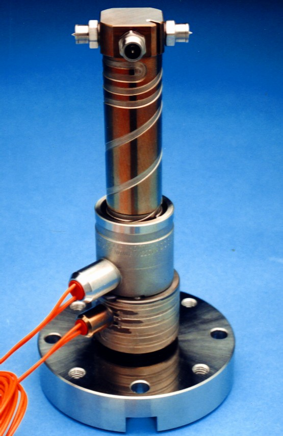

|
Kenar Giriþ Uçlarý - Edge Gate
Þekil-3 A'da kenar yolluk giriþ ucunun prensip tasarýmý gösterilmiþtir. Bu uç tipi yatay daire kesitli açýk bir uçtan farklý deðildir. Enjeksiyon baskýsýnýn sonunda yatay giriþ ucunun küçük kesitli kanalýnda donan malzeme, kalýbýn açýlmasý ile parça üzerinden koparak ayrýlmaktadýr. Kalýp açýk iken plastiðin kalýp içine damlamamasýný/ akmamasýný bu tapa vazifesi gören donmuþ plastik saðlamaktadýr. Bir sonraki enjeksiyonda bu plastik tapa yeni gelen plastiðin basýncý ile kalýp gözüne itilmekte ve sýcak malzemenin içinde eriyerek kaybolmaktadýr.
Yolluk giriþ kanalýnýn yüksekliði (veya kalýnlýðý) parça et kalýnlýðýndan daha düþük olmalý ve donmuþ plastik tapanýn kalýp gözüne kolay itilebilmesi için konik yapýlmalýdýr. Yolluk giriþ kanalýnýn yüksekliði (L) genellikle 0,5-1,0 mm arasýnda seçilir. Küçük deðerlerin tercih edilmesine raðmen buradaki sýnýrlama, kalýp gözü ile sýcak yolluk memesi için açýlan boþluklarýn arasýnda kalan ince et kalýnlýðýndaki çeliðin mukavemetidir. L mesafenin seçimi yolluk giriþinin parça üzerindeki konumuna ve parça geometrisine de baðlýdýr.
Yolluk giriþ ucu ile kalýp arasýnda býrakýlmasý gereken genleþme boþluðunun boyutlandýrýlmasý da sistemin saðlýklý çalýþmasý için çok önemlidir. Bu nedenler ile bu uç tipinin çalýþma sýcaklýðýndaki genleþmeleri de hesaba katýlarak kalýpta yapýlacak yerleþimin tasarýmý, uç giriþinin boyutlandýrýlmasý, bu hassas ölçülerin kalýba iþlenmesi ve sýcak yolluk sisteminin kalýba montajý çok kritiktir ve özel dikkat gerektirir. Mold Masters bu konudaki tecrübelerini daima kullanýcýlarýna sunmakta ve mutlaka kalýp tasarýmýný kontrol etmektedir.
Þekil-3 A Kenar giriþ ucu tasarýmý

Þekil-3 B Dört adet giriþ ucu vidalanmýþ yolluk memesinin fotoðrafý
Bu giriþ metodunun en büyük avantajý, Þekil- 3 B'deki fotoðrafta da görüldüðü gibi bir sýcak yolluk memesine 4 uç birden baðlanabilmesi ve 4 kalýp gözünün ayný anda beslenebilmesidir. Kenar yolluk giriþi gerektiren parçalarýn sýcak yolluklu kalýplarýnýn ilk uygulamalarýnda, standart sýcak yolluk memesinden sonra kenar yolluk giriþleri bir soðuk daðýtým yolluðu sayesinde gerçekleþtirilmek idi. Bu yeni tip yatay yolluk giriþ uçlu memelerin kullanýlmasý ile soðuk daðýtým yolluðu gereksinimi ortadan kalkmaktadýr. Soðuk daðýtým yolluðunun gerektireceði kapama kuvveti ihtiyacý da ortadan kalktýðýndan bu sistemin kullanýldýðý kalýplar daha küçük enjeksiyon makinelerine baðlanabilmekte, dolayýsý ile parça maliyeti de düþürülmektedir.
Ayrýca soðuk daðýtým yolluðunun ortadan kaldýrýlmasý ile yolluk giriþ ucundaki malzeme daha iyi kontrol edilebildiðinden parça kalitesi de arttýrýlmakta ve renk deðiþimleri de çok daha kolay ve hýzla yapýlabilmektedir.
Valf (Açma/Kapamalý) yolluk giriþ uçlarý - Valve Gate
Açma / Kapamalý yolluk giriþ uçlarý (Valve gate), enjeksiyon sýrasýnda açýk, kalýbýn içine gerekli malzeme miktarý basýldýktan sonra yolluk giriþi bir meme iðnesi ile kapanan yolluk giriþ tipleridir. Bu sistemlerin en büyük avantajý yolluk giriþinin istenildiði anda açýlýp kapatýlabilmesi ve enjeksiyon baskýsýnýn çok iyi kontrol altýnda tutulmasýdýr. Bugünkü uygulamalarda meme iðnesinin hareketi hidrolik veya pnömatik sistemler ile kontrol edilmektedir. Hidrolik sistemlerin dezavantajý yað kaçaðý durumundaki yangýn tehlikesi ile ortam kirliliðidir. Mold Masters firmasýnýn tasarýmlarýnda valf hareketini veren silindir-piston grubu hem hidrolik hem de pnömatik olarak çalýþtýrýlabilmektedir.
Bugün kullanýlan valf tipi yolluk giriþ uçlarýnda, ucu konik taþlanmýþ bir meme iðnesi kalýpta iþlenen yolluk giriþine oturmaktadýr (Þekil-4). Bu tasarým þekli yolluk memesi kanalýnýn eksenindeki iðne için iyi bir yataklama saðlarken, kalýpta bir basma kuvveti yaratacaðýndan yolluk ucundaki kalýp çeliðinin yeteri mukavemette olmasý gerekir. Bu sýcak yolluk sistemlerindeki en önemli nokta, sýcak plastiðin içinde çalýþmakta olan meme iðnesi boyunun genleþme toleransýnýn iyi hesaplanýp meme iðnesinin kalýba alýþtýrýlmýþ olmasýdýr. Meme iðnesi boyunun uzun olmasý durumunda giriþ ucundaki kalýp çeliðinin aþýrý yükler altýnda zorlanmasý hatta iðnenin eðilmesi söz konusu olabilir, kýsa olmasý durumunda ise parça üzerinde istenmeyen malzeme artýðý ile karþýlaþýlýr. Ýdeal olarak pin ucunun plastik parçaya 0.03-0.025mm bir derinlikte batacak þekilde ayarlanmýþ olmasýdýr. Þekil-4 de þematik olarak giriþ ucundaki pinin istenen ve istenmeyen konumlarý gösterilmiþtir.
Þekil-4: A - Doðru alýþtýrýlmýþ valf pin; B - Kýsa boylu valf pin parça yüzeyinde artýk býrakmakta
2- Yolluk giriþ tipi seçimi
Yolluk giriþ ucu tipine, daha sonra da yolluk giriþinin boyutuna karar verilir iken ilk önce plastik malzemenin bu giriþ tipine uygunluðu dikkate alýnmalýdýr.
Sprue Gate olarak adlandýrýlan açýk kesitli yolluk giriþleri parça yüzeyi üzerinde küçük bir yolluk parçasý býrakmaktadýr. Diðer giriþ tiplerine göre giriþ kesiti büyük olan bu giriþ tipi, liflenen termoplastikler için uygun olmamasýna raðmen plastiðe düþük kesme gerilmeleri uygulayarak iyi bir ütüleme imkaný vermektedir. Parçanýn iyi ütülenerek minimum gerilmeler ile elde edilmesi önemli olduðunda ve özellikle teknik parçalarda dýþ görünümün önemli olmadýðý durumlarda bu yolluk giriþi tercih edilmelidir. Bu yolluk giriþi ayný zamanda bir sýcak yolluk memesinden küçük soðuk daðýtým yolluk giriþleri ile bir çok parçanýn beslendiði kalýp tasarýmlarýnda da uygulama alaný bulmaktadýr.
Hot tip olarak adlandýrýlan yolluk giriþ metodu genellikle hem kristal hem amorf yapýlý plastikler için uygundur. Bu giriþ ucu diðer yolluk giriþleri ile karþýlaþtýrýldýðýnda parça üzerinde çok küçük bir iz (artýk) býrakmaktadýr. Bu artýðýn büyüklüðü yolluk giriþinin geometrisine ve malzemeye baðlýdýr. Çentik etkisine hassas olmayan termoplastiklerde ve büyük yolluk giriþlerinde parça üzerinde daha büyük artýk malzeme kalacaktýr. Bu nedenle çoðu zaman yolluk giriþi parça üzerindeki küçük bir küresel çöküntünün merkezine yerleþtirilerek parça yüzeyinden artýk malzemenin taþmasý gizlenir. Bu yolluk giriþ metodu, çok küçük giriþ kesitinde oluþan yüksek sýcaklýklar ve yüksek kesme gerilmeleri nedeni ile katkýlý ve kesme gerilmelerine hassas termoplastikler için uygun deðildir.
Yatay yolluk giriþi polimerin kalýp boþluðunda boyuna akarak parça yüzeyinde yarattýðý "jetting" izlerine engel olmak için parçanýn dik duvarlarýndan yapýlan bir giriþ tipidir. Parça üzerindeki yolluk giriþ izi soðuk yolluklu kalýplardaki tünel (dalgýç) yolluk izine benzemektedir. Yolluk giriþinin konumu, giriþ bölgesindeki kalýp çeliðinde yeterli mukavemet ve yeterli ýsý daðýlýmýný saðlayabilecek çelik kütlesi dikkate alýnarak seçilir.
Valve Gate giriþi metodunda, tutma basýncý sonunda giriþteki malzeme tam donmadan giriþ aðzý kapatýlabildiði için bu metot açýk yolluk giriþ tiplerine göre daha kýsa çevrim süreleri saðlamaktadýr. Bu metot parça üzerinde itici izi gibi belli belirsiz bir daire çizgi izi dýþýnda hiç bir artýk býrakmadýðýndan yüzey görünüm kalitesi önemli olan parçalarda kullanýlmaktadýr. Diðer yolluk giriþlerine göre çok büyük olan giriþ çapý sayesinde giriþteki basýnç kayýplarý ve kesme ýsýlarý çok düþüktür. Giriþteki düþük doldurma basýnçlarý ve geniþ çalýþma aralýðý sayesinde bu yolluk giriþi enjeksiyonu zor bir çok termoplastik için çok uygundur. Ayrýca damlama olasýlýðý her tip polimer için de ortadan kaldýrýlmaktadýr.
Kenar Yolluk giriþ tipi dýþýnda, dikey yolluk giriþ metotlarýndan biri seçilirken söz konusu uygulama için önemli olan kritik faktör dikkate alýnmalýdýr.
Aþaðýdaki tabloda dikey yolluk giriþ metotlarýnýn çeþitli kritik faktörlere göre deðerlendirilmeleri özetlenmiþtir;
Kritik faktörler |
Dikey yolluk giriþ metodunun uygunluðu |
Hot Tip |
Sprue |
Valve |
Malzemede Kesmelerin Önlenmesi için |
ZAYIF |
ÝYÝ |
ÝYÝ |
Parçada Gerilmelerin Önlenmesi için |
ZAYIF |
ÝYÝ |
ÝYÝ |
Hýzlý Çevrim Gereksinimi var ise |
ÝYÝ |
ZAYIF |
EN ÝYÝ |
Yüzey Görünüm Kalitesi önemli ise |
ÝYÝ |
ZAYIF |
EN ÝYÝ |
Yüksek Kalýp Maliyetinin Önlenmesi |
ÝYÝ |
ÝYÝ |
ZAYIF |
Damlamanýn Önlenmesi için |
ÝYÝ |
ZAYIF |
EN ÝYÝ |
Büyük Baský Miktarlarý için |
ZAYIF |
ÝYÝ |
ÝYÝ |
Ütülemenin Önemli Olmasý durumunda |
ZAYIF |
ÝYÝ |
ÝYÝ |
Hassas Çalýþma Aralýðý Gereksinimi |
ZAYIF |
ÝYÝ |
ÝYÝ |
Yolluk giriþ metoduna karar verildikten sonra giriþ bölgesindeki ýsý daðýlýmýna ve termoplastik cinsine göre yolluk giriþ ucunun tipine karar verilmelidir. Bazý yolluk giriþ tiplerinde, soðuk kalýp çeliði ile temas eden meme ucunun soðumamasý için araya giren plastik malzemenin izolasyon özelliðinden yararlanýlmaktadýr. Basýlan parçadan yüksek görüntü kalitesi bekleniyor ve problemler ile karþýlaþýlmak istenmiyorsa yolluk giriþ ucunun tasarýmýna çok dikkat etmek gerekir. Kullanýlan polimere uygun olmayan yolluk giriþ metodu veya yolluk giriþ ucundaki soðutma þartlarý, giriþ ucunda plastiðin damlamasýna/akmasýna, malzemede aþýrý kesme gerilmelerine, plastiðin yapýsýnda bozulmalara ve kalýp gözlerinin iyi dolmamasýna neden olur. Bu nedenle kullanýlan plastiðin amorf veya kristalin yapýda mý olduðuna dikkat etmek gerekir. Bu iki grup arasýnda genel bir karþýlaþtýrma yapýlýrsa amorf malzemeler yavaþ katýlaþma hýzlarýndan dolayý kristal yapýlý mühendislik plastiklerine göre yolluk giriþ bölgesinde, çok daha fazla bir soðutmaya gereksinim duyarlar. Aþaðýda örnekleri verilen yolluk giriþlerinin ayrýntýlarýnda, amorf ve kristal tipi yolluk giriþlerinin özellikleri arasýndaki farklýlýklar gösterilmektedir.
Kristal yapýlý termoplastikler amorf yapýlýlara göre daha hýzlý katýlaþmaktadýr. Bu nedenle kristal yapýlý termoplastiklerde giriþ bölgesi daha ýlýk tutularak bir ön katýlaþmanýn oluþmasý, dolayýsý ile yetersiz ütüleme olasýlýðý önlenmelidir. Katkýlý plastikler de kristal yapýlý malzemeler gibi davrandýðýndan ýlýk yolluk giriþi seçilmesini gerektirirler. Katkýlý ve kristal yapýlý malzemeler ile mühendislik plastikleri için tasarýmlandýrýlan yolluk giriþlerinde ise memedeki ýsýnýn kalýptaki yolluk giriþine transfer edilebilmesine dikkat edilmelidir. Genellikle hýzlý katýlaþan malzemelerde büyük yolluk giriþleri tercih edilmelidir. Hýzlý katýlaþan malzemeler için yolluk giriþ bölgesinin sýcaklýðý sýcak yolluk memesi ile kalýbýn temasý arttýrýlarak arttýrýlýr. Yolluk giriþ bölgesine transfer edilen ýsý yardýmý ile giriþ aðzýndaki katýlaþma geciktirilir. Kendinden izolasyonlu yolluk giriþ uçlarý hýzlý katýlaþan kristal yapýlý termoplastikler için uygun deðildir.
Amorf yapýlý plastiklerde katýlaþma hýzý çok daha yavaþtýr. Uzun çevrim sürelerini ve damlamayý önlemek için sýcak yolluk sistemi ile kalýptaki yolluk giriþ bölgesi arasýnda etkin bir ýsý izolasyonu olmalýdýr. Yolluk giriþ ucundaki ýsý izolasyonu ne kadar iyi ise uç amorf malzemeler için o kadar uygundur. Genellikle sýcak yolluk ucunun izolasyonu için katýlaþmýþ bir malzeme tabakasý kullanýlmaktadýr. Bu yöntem amorf plastikler için çok uygun iken, sýcakta bekleme süresine hassas olan mühendislik plastikleri için ve hýzlý renk deðiþimleri istenen uygulamalar da uygun deðildir. Þekil-5'de gösterilen "Valve Gate" tasarýmýnda, ince malzeme filmi tabakasý izolasyon saðlayarak yolluk giriþinin meme tarafýndan ýsýtýlmasýna engel olur. Bu metot amorf ve yarý kristal malzemeler için çok uygundur. Fakat kristalleþme oraný yüksek ve sýcaklýkta bekleme süresine hassas olan mühendislik plastikleri için uygun deðildir.
|
|
Amorf malzemeler için yolluk giriþi |
Kristal yapýlý malzemeler için yolluk giriþi |
Þekil-5: Amorf ve Kristal Yapýlý Termoplastikler için Valve Gate Tipi Giriþ Uçlarý |
Bu nedenler ile ayný yolluk giriþ metodu için termoplastik cinsine göre farklý yolluk giriþ tipleri veya tasarýmlarý kullanýlmalýdýr. Sprue Gate yolluk giriþ metodu için amorf ve kristal yapýlý plastiklerde kullanýlmasý uygun olan yolluk giriþ tasarýmlarýnýn resimleri Þekil-6'da verilmiþtir;
|
|
Amorf termoplastikler |
Kristal yapýlý termoplastikler |
Þekil-6: Amorf ve Kristal Yapýlý Termoplastikler için Sprue Gate Tipi Giriþ Uçlarý |
Mühendislik plastiklerindeki uygulamalarda, yolluk giriþinin soðutulmasý amorf yapýlý malzemelerin yolluk giriþleri kadar kritik deðildir. Bu uygulamalarda polimerin erken soðumasýna engel olan ve yolluk giriþini sýcak tutan bir sýcak yolluk sistemi aranýr. Cam takviyeli PA gibi aþýndýrýcý malzemeler kullanýldýðýna ise aþýnmanýn fazla olduðu bölgelere dikkat edilmelidir. Yolluk giriþ ucundaki küçük çaplarda aþýrý bir aþýnma oluþur. Bu nedenle deðiþtirilebilir yolluk giriþ uçlarýnýn kullanýmý tercih edilir.
Yolluk giriþ metoduna karar verildikten sonraki adým yolluk giriþ kesitinin boyutlandýrýlmasýdýr. Genellikle parçanýn görüntüsel kalitesini arttýrmak için küçük yolluk izi/artýðý tercih edilmekte ve yolluk giriþinin çapý da minimum seçilmektedir. Küçük yolluk giriþlerinde ise basýnç kayýplarý artmakta, parçaya gerilmeler ilave edilmekte ve aþýrý kesme ýsýlarý sonucu parçada baþka kusurlar ortaya çýkabilmektedir. Parçanýn görüntüsel kalitesi önemli deðil ise yolluk giriþ kesitini büyük seçmek yararlý olmaktadýr.
|